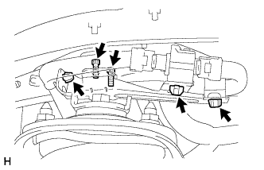
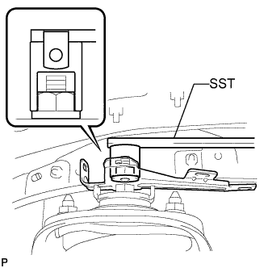

ПРИВОД АМОРТИЗАТОРА > СНЯТИЕ |
| 1. ОТСОЕДИНИТЕ ПРОВОД ОТ ОТРИЦАТЕЛЬНОГО ВЫВОДА АККУМУЛЯТОРНОЙ БАТАРЕИ |
| 2. СНИМИТЕ ПЕРЕДНЕЕ КОЛЕСО |
| 3. СНИМИТЕ ПРИВОД ЛЕВОГО АМОРТИЗАТОРА |
|  |
Открепите 3 зажима, а затем отсоедините разъем.
С помощью шестигранной головки (4 мм) выверните 2 болта с внутренним шестигранником и снимите привод амортизатора.
| 4. СНИМИТЕ ЛЕВЫЙ КРОНШТЕЙН УПРАВЛЕНИЯ ПОДВЕСКОЙ |
|  |
Используя SST, отверните гайку и снимите кронштейн.